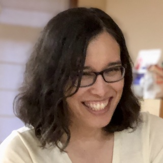

Amy Ko
Tenured Professor and Program Chair at the University of Washington Information School
Can you describe your path to becoming the program chair of the Information school at UW?
It’s been a long one! I first discovered research when looking for a summer job in college in 1999. I immediately fell in love with academia as a place where I could follow my curiosity, inspire people, and ask and answer big questions. After getting my Ph.D. in 2008, I joined the Information School at the University of Washington and quickly fell in love with teaching undergraduates. After six years as an Assistant Professor, and two more years doing a startup on leave, when I came back to the university in 2016, my Dean asked if I would like to chair Informatics. I was excited about the opportunity to make the program more equitable, inclusive, and diverse, and so I said yes.
Can you tell us about your work in the Code and Cognition lab and how that led you to start AnswerDash?
My research interests have always centered on people’s struggle with making sense of code and using it to express themselves. We’ve studied everything from debugging and developer tools to computer science education and teacher training. To me, all of these topics are all about the same thing: human beings trying to comprehend software. AnswerDash was an offshoot of those efforts, specifically concerned with people trying to get help with using software. My Ph.D. student and colleague Jacob Wobbrock had invented a way of quickly finding help by clicking on parts of a user interface. Dr. Wobbrock and I grew AnswerDash out of that research project into a successful (and recently acquired) business.

What drew you to join the Information School at UW and in what ways do you plan to impact its vision?
My interests were always split between computing and people. As an undergraduate, I studied computer science because I wanted to learn how to make things through programming. But I studied psychology because I wanted to understand how people think, reason, and behave in the world. When I was applying to faculty positions all around the country, the Information School was one of the few places that not only combined these two perspectives, but added even more breadth that I’d lacked in my education: information, organizations, society, ethics, library sciences, and more. I really came here to learn. Of course, after 12 years as faculty, I’ve learned a lot, and have spent much more of my time trying to impact its direction, helping to hire new faculty, set the vision for Informatics, forge new partnerships with other departments on campus, and even influence the curriculum and hiring at other Information Schools across the world.
As a tenured professor and founder how do you separate your personal life from work and maintain work-life balance?
The only way I’ve found is to draw sharp boundaries. I was a young parent in graduate school, and so my strategy was to treat school like a 9-5 job, arriving, working hard, but then coming home and leaving work at work. I didn’t work late nights (except when I was traveling for conferences), and I did all of my homework and research on campus. I continued that same habit as a professor. Working at home during the pandemic has certainly made this harder, but I’m lucky to have a dedicated home office, so I only do work when I’m in the office. In the rest of the house, it’s family, meals, playing with my cat, and other fun.
What traits do you think have contributed most to your success?
I’ve thought a lot about this, and I think much of it has to do with two things outside of my control. First, I was just incredibly lucky to be surrounded by amazing teachers: my mom was a 5th-grade teacher and inspired me every day to be curious, and nearly all of my K-12 teachers were just so smart, engaging, and wonderfully encouraging. It wasn’t until I started working on K-12 CS education that I realized how lucky I was to have such an amazing public education. The second factor, which is more personal, is that I was a closeted trans youth for my entire childhood, adolescence, and young adulthood. I spent most of my time doing other things—learning, achieving, making—instead of focusing on myself because accepting my transness was too scary, too stigmatizing. Ignoring yourself is not a strategy I recommend, even though it happened to be helpful professionally in my case!
In your experience, what differentiates exceptional students from average ones?
A lifetime of privileged access to basic resources: food, shelter, love, mentorship, inspiration. There’s some hard work there too, and a strong foundation of resilience can help too. I try to encourage any student that doesn’t feel exceptional to first figure out if all their needs are met. Everyone can be exceptional with the right support.
What unconventional technical or soft skills do you recommend students to develop?
Nothing is more important than clear communication. Too often, I find that students discount the importance of clear speech, clear writing, and clear explanations and thinking. It’s the foundation of any career. It’s certainly more important than any technical skill since technical skills come and go.
What challenges have you faced as a minority in STEM?
I prefer to avoid the term minority. There are plenty of trans people in the world, plenty of white people in the world, plenty of Asian people in the world, plenty of LGBT people in the world. I’m all of those things. Taking an intersectional view on diversity shows us that there are no majority groups, there are just people, all of whom are different in their own ways. A better term is “minoritized”: this is a word that is more consistent with reality, which is that organizations are biased against the inclusion of many kinds of people, sometimes knowingly, sometimes unknowingly. Processes, policies, and explicit choices create artificially minoritized groups. Most of the challenges I face being in a minoritized group come from people’s ignorance of these structural forces and bias.
How do you and the UW community work to advocate for minoritized groups in STEM?
We work hard to eliminate structural barriers that systematically exclude people because of their race, gender identity, ability, or sexuality. That’s hard, long-term, political work that requires people to change policies and practices that are often long-lived and assumed to be natural, even though they are anything but.
As a professor, many students and women look up to you, but who do you look up to?
I look up to so many! Some are mentors that I’ve had in academia, others are people younger than me. Much of my courage to come out as transgender came from seeing so many trans youth courageously be out themselves. I think if we’re all looking hard enough, we can all be an inspiration to other people in our own ways.
What advice would you give to young girls and minoritized groups pursuing a career in STEM?
Focus on yourselves, not on others. We spend too much time questioning our interest, our belonging, and our abilities, comparing ourselves to others. If we spent all that time just growing our interests, developing our skills, and excelling, we’ll be unstoppable. There will still be unjust biases and flawed cultures in STEM, and there’s only so much that we can do to change those cultures. But by excelling at what we do, we will change them eventually—and if not, we’ll just create our own more inclusive cultures.